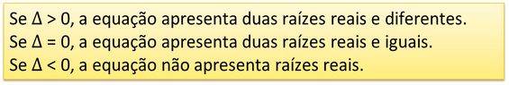

Um jardim quadrado tem área igual a 484 m². Qual a medida de seus lados?
Definição
A equação do segundo grau recebe esse nome porque é uma equação polinomial cujo
termo de maior grau está elevado ao quadrado. Uma das formas de resolvê-la é através da Fórmula de Bhaskara.
ax²+bx+c=0
Solução:
Δ = b²-4ac
obs:

Qual o comprimento e largura de um terreno retangular cuja área é 247m². sabendo que seu
comprimento é maior que sua largura em 6m?
Uma pesquisa mostra que a cada 1 real que um cabelereio aumenta no valor do corte ele
perde 10 clientes, se hoje ele atende 200 clientes a 10 reais o corte. Qual o valor para
o melhor faturamento?